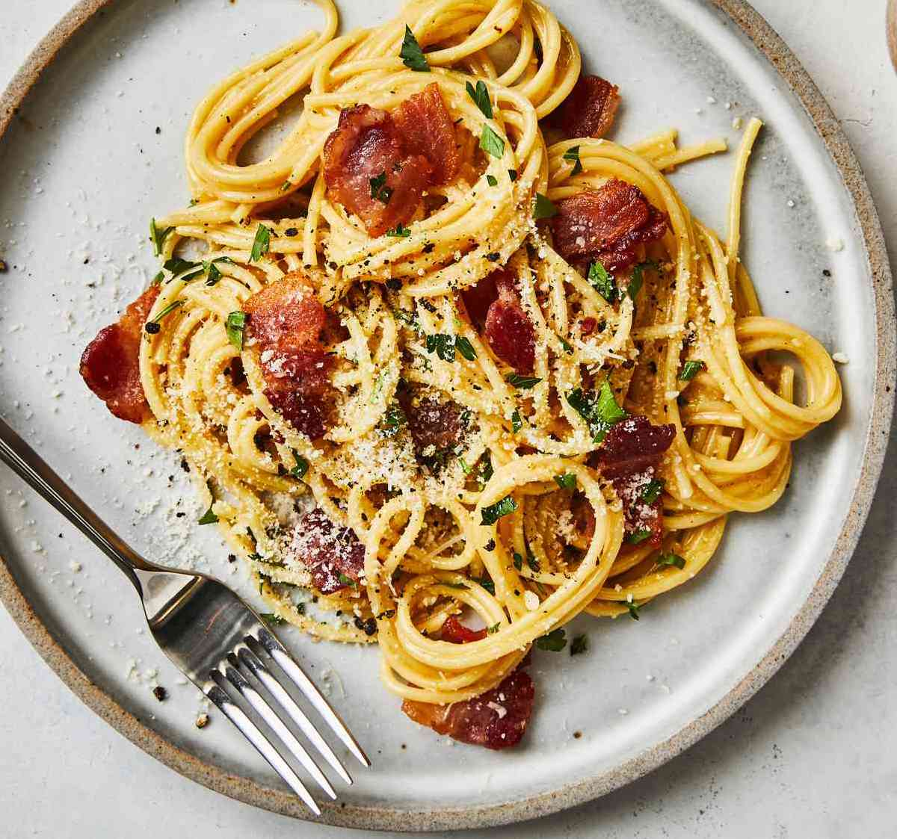

Authentic Italian Spaghetti Carbonara

Description
Are you ready to master a classic Italian dish that's as delicious as it is hard to pronounce? Introducing spaghetti carbonara - the pasta dish that originated in Rome and has since become a worldwide favorite. This dish is so popular, it's practically a requirement for any Italian restaurant worth its salt (or parmesan). But don't let its simple ingredients fool you - cooking carbonara requires some serious culinary skills. It's all too easy to end up with scrambled eggs instead of a creamy sauce!
So, grab your apron and a whisk, and let's see if you can take on the carbonara challenge without cracking under the pressure (or overcooking the eggs). Just don't be surprised if you start speaking with an Italian accent by the end of the night. Mama mia, let's get cooking!
Ingredients
- 1 pound spaghetti
- 6 ounces pancetta or bacon, diced
- 4 garlic cloves, minced
- 4 large egg yolks
- 1 cup freshly grated Parmesan cheese
- 1/2 cup heavy cream
- Salt and pepper, to taste
- Chopped parsley (optional)
Instructions
- Bring a large pot of salted water to a boil. Add the spaghetti and cook according to the package instructions until al dente.
- While the spaghetti cooks, heat a large skillet over medium heat. Add the pancetta or bacon and cook until crispy, stirring occasionally. Add the minced garlic and cook for an additional 30 seconds.
- In a medium bowl, whisk together the egg yolks, Parmesan cheese, and heavy cream.
- When the spaghetti is done, reserve 1 cup of the pasta water and drain the rest. Add the spaghetti to the skillet with the pancetta and garlic and toss to combine.
- Remove the skillet from the heat and add the egg yolk mixture to the pasta, tossing quickly to coat the spaghetti. If the pasta seems dry, add some of the reserved pasta water to loosen it up.
- Season with salt and pepper to taste, and sprinkle with chopped parsley if desired. Serve hot and enjoy!
This classic pasta dish may seem simple, but it requires a bit of finesse to get just right. Don't rush the process, and be sure to use high-quality ingredients for the best results. Buon appetito!